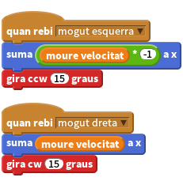

Llista de tasques
- Per fer que una roda sembli que es mogui, haurem de rotar-la i moure-la una mica cada com rebem un missatge de moviment.

- Si voleu, podeu canviar els valors per variables del tipus
moure_velocitatper tal de poder controlar la velocitat en totes les direccions des d’un sol lloc.